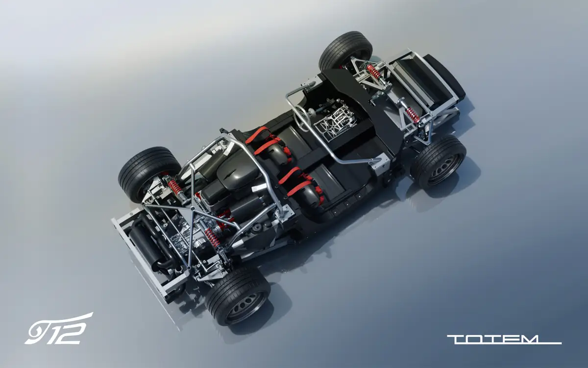

V12
Naturally aspirated
6
Speed manual transaxle
45:55
Target weight distribution
One
Platform, many coachbuilt bodies
The Italian art of the automobile, reimagined.
The T12 Series begins a new chapter for Totem: a family of limited-production motor cars built on Tiziano, the first proprietary modular architecture of the house.
One engineering base supports different proportions and identities. The T12 is not tied to one silhouette: it explores different interpretations of Italian design, open and closed, each created around the person who commissions it.
A technical canvas.
Tiziano is a clean-sheet architecture that brings together the monocoque, subframes, powertrain, transmission, suspension, steering, braking and auxiliary systems. A carbon-fibre central monocoque is joined to aluminium front and rear subframes, while a modular upper structure allows different bodies without changing the engineering beneath.

Coachbuilt, once again.
The great Italian coachbuilders of the 1950s and 1960s created distinct motor cars on shared mechanical foundations. The T12 returns to that idea: fixed mechanical hard points allow open or closed cars of different shapes and volumes.
Beauty is the purpose. Engineering is the method.
Engineering and design evolve together: every line and every component is tied to the driving character the car is meant to have.
Created with one person in mind.
Clients collaborate directly with Totem’s designers, engineers and craftsmen. Bodywork, lighting, intakes, materials, finishes and interiors can all be personalised: a one-off within a series.
Engineering foundations.
The architecture of the T12 Series as developed with Italtecnica Engineering.
Powertrain
- Engine
- Naturally aspirated V12
- Development partner
- Italtecnica Engineering
- Transmission
- Rear-mounted six-speed manual transaxle
- Clutch
- Hydraulically actuated twin-plate
- Differential
- Limited-slip
- Traction
- Rear-wheel drive
Architecture
- Platform
- Totem proprietary Tiziano modular platform
- Central structure
- Carbon-fibre monocoque
- Front and rear structures
- Aluminium subframes
- Upper structure
- Modular tubular structure for different coachbuilt bodies
- Bodywork
- Carbon fibre
- Body configurations
- Open and closed coachbuilt interpretations
- Target weight distribution
- 45% front / 55% rear
Chassis
- Front and rear axles
- Double wishbones with pushrod and rocker actuation
- Main components
- 7075-T6 aluminium alloy
- Damping
- Electronically adjustable compression and rebound
- Anti-roll
- Adjustable front and rear anti-roll bars
- Front brakes
- Brembo six-piston fixed aluminium calipers, ventilated discs
- Rear brakes
- Brembo four-piston fixed aluminium calipers, ventilated discs
- On request
- Carbon-ceramic discs
- Steering
- Hydraulic power-assisted rack and pinion
- Ergonomics
- Adjustable steering column and pedal box
Development specifications. Final figures will be announced with each coachbuilt interpretation.